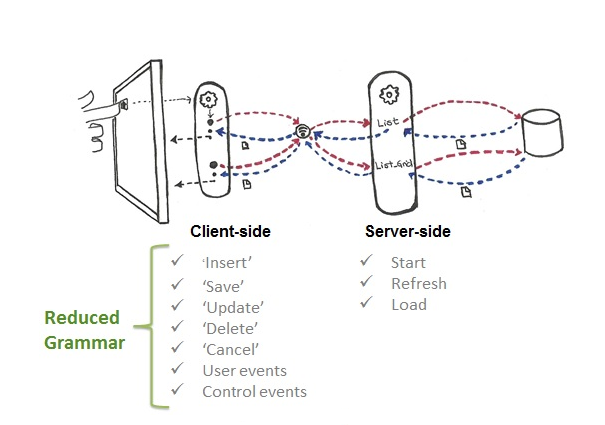

Native Mobile Applications Events
The Native Mobile Applications generated by Native Mobile Generator include two types of events: Client Events and Server Events.
- Which is the triggering order for events in Native Mobile apps?
- Which events are executed on my Device (Client)?
- Which events are executed on the Server?
- What can you do in a Server event?
- What can you do in a Client event?
Here you will examine how this is managed, and the limitations and features you need to bear in mind for developing better Native Mobile Applications.
You should already be familiar with System events (executed on Server) if you have some experience with Web or Windows Development with GeneXus. They are the Start, Refresh, and Load Events.
Client events include the User events created by you (there can be as many as desired), the Control events related to controls on the form, and ClientStart event
Regardless of the event type you refer to, you want/need to know where the event is executed, because depending on that, the resources you may use will vary, and so will the applicable restrictions. There are also some differences relative to syntax issues that you should consider.

Server events
In these events (Start, Refresh, and Load) you can execute all the commands accepted by GeneXus.
- The Start event is executed the first time that a Panel object or Work With for Smart Devices object node is opened on a device. It will not be executed again unless you exit the panel or node and open it again.
- After the Start event, the Refresh event is executed. Note that the Refresh event may be executed several times, whereas the Start event will execute only once. Moreover, as the navigation of the fixed part of the form and the grid are separated, each will have (if there are attributes involved) its own Base Table. So, the Refresh event accesses the fixed-part base table (if any).
- The Load event is the last of the system events executed and it is only executed when there is a grid on the layout. If the Grid has a Base Table, the Load event is executed as many times as registers exist in the base table. If it is based on variables it will be executed once (allowing you to loop over a collection of items and call the de Load command). If the grid is based on an SDT variable, the Load event can only be used for customizing the control's appearance (style class, visible state, selecting a different grid item layout, etc.).
Notes:
- When the Refresh command is invoked, it will execute both the Refresh and the Load events.
- If both the fixed-part and the grid have a base table, and if GeneXus finds a 1 to N relationship between them, the records of the Load will be the related ones. Otherwise, loads will be unrelated (there will be two independent navigations, one for the Refresh and another one for the Load).
- Remember that there is no possible scenario for a Refresh event to be executed unless the panel is activated (opened), or unless the Refresh event is invoked (through the Refresh command).
- There may be several Load events in the same Panel object, one for each grid. In that case, the event name must be prefixed with the grid name. For example Event Grid1.Load
What happens behind the scene? Refer to Server-side Events in Native Mobile Applications.
And what if it is a Detail with many Sections? Refer to Event Triggering Order in Native Mobile Applications
Client Events
Client events are the application's programmatic response to user interaction. These forms of interaction can be seen as buttons on the screen, as well as in images, or other controls.
There are two main types of client events: user and control events. Both are associated with controls.
Client events enable you to add behavior and logic to the application by mixing the execution between the client and server sides. As mentioned, Start, Refresh, and Load are server events executed completely on the server, meaning that they cannot use any of the device's resources. In client events, you can combine the power of the server and the resources of our device.
What happens when the user triggers an action (client event)? The associated code is executed on the client-side (on the device) unless a roundtrip to the server is required (for example, when a procedure must be invoked). In any case, system events are not executed unless they are explicitly required through the Refresh command.
So what can you do in a user event? Refer to Client-side Events in Native Mobile Applications
Videos
 Grammar of Events on the Client Side and Composite Command
Grammar of Events on the Client Side and Composite Command
Events in Mobile Applications